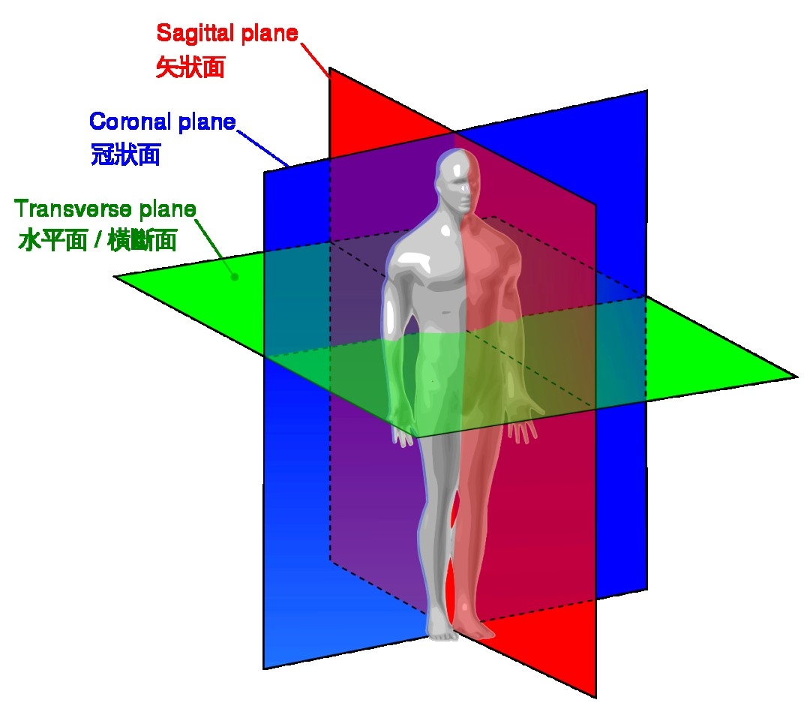
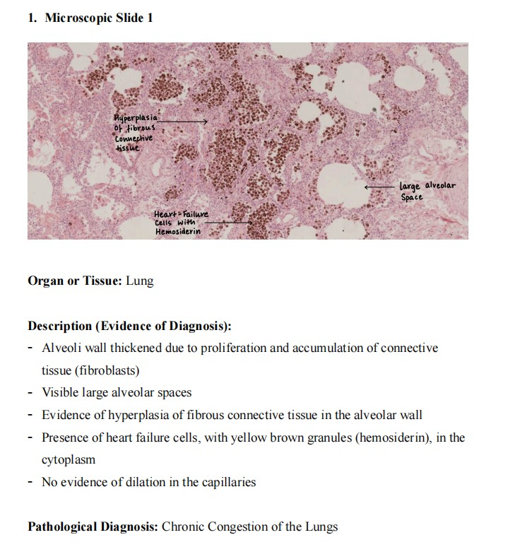
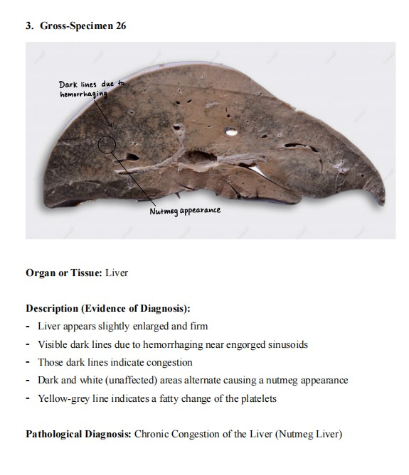

How to Work in the Pathology Labروش کار در آزمایشگاه پاتولوژی
This Part is the method, and it is worth more marks than any single specimen. A pathologist is paid to convert a thing into words — reliably, in the same order every time, so that a colleague reading the words can reconstruct the thing. Learn the order once and it serves you for every specimen you will ever see.این بخش، «روش» است و نمرهٔ آن از هر نمونهٔ منفرد بیشتر است. پاتولوژیست برای این پول میگیرد که یک چیز را به کلمات تبدیل کند — قابلاعتماد، هر بار به یک ترتیب، تا همکاری که آن کلمات را میخواند بتواند آن چیز را بازسازی کند. این ترتیب را یکبار یاد بگیرید، برای هر نمونهای که در عمرتان خواهید دید بهکارتان میآید.
By the end of this Part you should be able toدر پایان این بخش باید بتوانید
Describe any gross specimen in a fixed three-step order, without omissions.هر نمونهٔ ماکروسکوپی را با ترتیب ثابت سهمرحلهای و بدون جاافتادگی توصیف کنید.
Use the microscope in the correct sequence and say what each magnification is for.میکروسکوپ را با توالی درست بهکار ببرید و بگویید هر بزرگنمایی به چه کار میآید.
Write a lab report in the format the department marks.گزارش آزمایشگاه را در قالبی که گروه آموزشی نمره میدهد بنویسید.
Distinguish a description from a diagnosis — and know why writing the second without the first loses marks.میان توصیف و تشخیص تمایز بگذارید — و بدانید چرا نوشتن دومی بدون اولی نمره را از بین میبرد.
1.1What This Course Is, and How It Is Markedاین درس چیست و چگونه نمرهگذاری میشود
The laboratory course runs from 16 September to 11 November and is taught by Dr Yongtao He (Attending, Pathology Department, Sir Run Run Shaw Hospital), whose clinical work is surgical pathological diagnosis — which is to say, the person marking your descriptions does this for a living.دورهٔ آزمایشگاه از ۱۶ سپتامبر تا ۱۱ نوامبر برگزار میشود و مدرّس آن دکتر یونگتائو هه (متخصص گروه پاتولوژی بیمارستان سِر ران ران شاو) است که کار بالینیاش تشخیص پاتولوژی جراحی است — یعنی کسی که توصیفهای شما را تصحیح میکند، همین کار را حرفهای انجام میدهد.
Five methods make up the course. They are listed in the order of increasing difficulty, and this session covers the first two:پنج روش، این درس را میسازند. بهترتیب دشواری فزاینده فهرست شدهاند و این جلسه به دو مورد نخست میپردازد:
Table 1.1 The five methods of the laboratory courseجدول ۱.۱ — پنج روش دورهٔ آزمایشگاه
Methodروش
What it asks of youچه از شما میخواهد
Observe and describe gross specimensمشاهده و توصیف نمونههای ماکروسکوپی
Naked-eye examination of the organ. §1.2معاینهٔ عضو با چشم غیرمسلح. بخش ۱.۲
Observe and describe microscopic slidesمشاهده و توصیف لامهای میکروسکوپی
Tissue architecture and cells. §1.3معماری بافت و سلولها. بخش ۱.۳
Pathological and differential diagnosisتشخیص پاتولوژیک و افتراقی
Name the lesion — and name what it is not, and why.ضایعه را نام ببرید — و بگویید چه نیست و چرا.
Reconcile the clinical story with the tissue. Later in the course.تطبیق شرححال بالینی با بافت. در ادامهٔ دوره.
Autopsyکالبدشکافی
The whole body as one specimen. Later in the course.کل بدن بهمثابه یک نمونه. در ادامهٔ دوره.
Bench Technique — what a report must containفن آزمایشگاه — گزارش باید شامل چه باشد
Every experiment report (the homework) has three fixed parts:هر گزارش آزمایش (تکلیف) سه بخش ثابت دارد:
1–2 slides that you must draw.۱ تا ۲ لام که باید نقاشی کنید.
1–2 specimens that you must describe.۱ تا ۲ نمونه که باید توصیف کنید.
Submission on Xuezaizheda (学在浙大) → Homework, as a Word document with your photographs taken from the Digital Human STEM Morphology System.ارسال در سامانهٔ «شُوِهزایجِهدا» ← بخش تکالیف، بهصورت فایل ورد همراه با عکسهایی که از سامانهٔ ریختشناسی دیجیتال گرفتهاید.
Exam Trap — description is not diagnosisدام امتحانی — توصیف، تشخیص نیست
The commonest way to lose marks is to write “Brown atrophy of the heart” and stop. That is the conclusion. The marks are in the evidence: reduced size, narrowed transverse diameter, light brown colour, tortuous coronaries. A correct diagnosis with no description is an unsupported guess; a full description with a wrong diagnosis still earns most of the marks. Always describe first, then name.شایعترین راه از دست دادن نمره این است که بنویسید «آتروفی قهوهای قلب» و تمام. این نتیجهگیری است. نمره در شواهد است: کاهش اندازه، باریکشدن قطر عرضی، رنگ قهوهای روشن، عروق کرونر پرپیچوخم. تشخیص درست بدون توصیف، حدسی بیپشتوانه است؛ توصیف کامل با تشخیص نادرست همچنان بیشتر نمره را میگیرد. همیشه اول توصیف کنید، بعد نام ببرید.
1.2Describing a Gross Specimenتوصیف نمونهٔ ماکروسکوپی
Three steps, always in this order. The order matters because it moves from certain to uncertain: you can be sure what organ you are holding long before you can be sure what is wrong with it, and a description that starts at the lesion has no frame of reference.سه گام، همیشه به همین ترتیب. ترتیب مهم است چون از قطعی به نامطمئن پیش میرود: خیلی پیش از آنکه مطمئن شوید مشکل چیست، مطمئنید چه عضوی در دست دارید، و توصیفی که از ضایعه شروع شود چارچوب مرجع ندارد.
Identify the organ.What is this? If unsure, say what it resembles and what structures you can identify — an unnamed organ still earns description marks.این چیست؟ اگر مطمئن نیستید، بگویید شبیه چیست و چه ساختارهایی را میشناسید — عضو نامبردهنشده همچنان نمرهٔ توصیف میگیرد.عضو را شناسایی کنید.
Describe the whole organ — size and weight · shape · colour · surface · cut surface.Is it bigger or smaller than normal? Is the shape preserved? Is the capsule smooth or granular? What does the cut face show?بزرگتر است یا کوچکتر از طبیعی؟ شکل حفظ شده؟ کپسول صاف است یا دانهدار؟ سطح برش چه نشان میدهد؟کل عضو را توصیف کنید — اندازه و وزن · شکل · رنگ · سطح · سطح مقطع.
Describe the lesion — localisation · number · size · relationship to the surrounding normal tissue.Where exactly? One or many? How big? Is the border sharp or blended — and does it push the normal tissue aside or replace it?دقیقاً کجا؟ یکی یا چندتا؟ چقدر بزرگ؟ مرز مشخص است یا محو — و بافت طبیعی را کنار میزند یا جایگزینش میشود؟ضایعه را توصیف کنید — محل · تعداد · اندازه · رابطه با بافت طبیعی اطراف.

Fig 1.1 The three planes. A specimen is almost always cut in one of them, and saying which is part of describing the cut surface — a kidney bisected in the coronal plane shows cortex, medulla and pelvis at once, which is why that is the standard renal cut.سه صفحهٔ تشریحی. نمونه تقریباً همیشه در یکی از آنها بریده میشود و گفتن کدامیک، بخشی از توصیف سطح مقطع است — کلیهای که در صفحهٔ کرونال نصف شده، قشر، مدولا و لگنچه را یکجا نشان میدهد و به همین دلیل برش استاندارد کلیه همین است.
Step 2 and step 3 are often confused. The rule is simple: step 2 is about the organ, step 3 is about what has gone wrong inside it. In a diffuse process such as atrophy the two merge, because the whole organ is the lesion — and in that case say so explicitly rather than leaving step 3 blank.گامهای ۲ و ۳ اغلب خلط میشوند. قاعده ساده است: گام ۲ دربارهٔ خود عضو است، گام ۳ دربارهٔ آنچه درونش خراب شده. در فرایندی منتشر مانند آتروفی، این دو در هم میآمیزند چون کل عضو همان ضایعه است — در این حالت صریحاً همین را بنویسید، نه اینکه گام ۳ را خالی بگذارید.
High-Yield — the six words for any organنکتهٔ کلیدی — شش واژه برای هر عضو
Size · Weight · Shape · Colour · Surface · Cut surface. Run down that list for every gross specimen and you physically cannot omit anything the marker is looking for. If a feature is normal, say that it is normal — “the capsule is smooth and the surface is not nodular” is a positive observation, not a gap.اندازه · وزن · شکل · رنگ · سطح · سطح مقطع. این فهرست را برای هر نمونهٔ ماکروسکوپی مرور کنید و عملاً نمیتوانید چیزی را که مصحّح دنبالش است جا بیندازید. اگر ویژگیای طبیعی است، بنویسید که طبیعی است — «کپسول صاف است و سطح ندولار نیست» یک مشاهدهٔ مثبت است، نه جای خالی.
1.3Reading a Microscopic Slideخواندن لام میکروسکوپی
The microscope has its own fixed order, and it exists to stop you doing the thing every beginner does — starting at 40× and getting lost in beautiful cells with no idea which part of which organ you are looking at.میکروسکوپ ترتیب ثابت خودش را دارد و برای این است که جلوی کاری را بگیرد که هر تازهکاری میکند — شروع از ۴۰× و گمشدن میان سلولهای زیبا، بیآنکه بدانی کدام بخش از کدام عضو را میبینی.
Naked eye, slide held to the light.What shape is the tissue on the glass? Where are the pale and dark zones? This tells you the organ and where to point the objective — a kidney shows cortex and medulla, a stomach shows a mucosal ribbon.بافت روی لام چه شکلی است؟ نواحی روشن و تیره کجایند؟ این به شما میگوید عضو چیست و عدسی را کجا بگذارید — کلیه قشر و مدولا نشان میدهد، معده نواری از مخاط.با چشم غیرمسلح، لام را رو به نور بگیرید.
Low power, 4× or 10× — orientation and identification.What organ, and which layers, in what order? Is the architecture preserved or destroyed? Every diagnosis is made here. Then scan the whole section before you go higher.کدام عضو و کدام لایهها، به چه ترتیب؟ معماری حفظ شده یا تخریب؟ هر تشخیصی همینجا گذاشته میشود. سپس تمام مقطع را بپیمایید پیش از آنکه بزرگنمایی را بالا ببرید.بزرگنمایی پایین، ۴× یا ۱۰× — جهتیابی و شناسایی.
High power, 40× — fine detail only.Now, and only now: what do individual cells look like? Nucleus, cytoplasm, pigment, inclusions. High power confirms a diagnosis; it does not make one.حالا و فقط حالا: تکتک سلولها چه شکلیاند؟ هسته، سیتوپلاسم، رنگدانه، انکلوزیون. بزرگنمایی بالا تشخیص را تأیید میکند؛ تشخیص نمیگذارد.بزرگنمایی بالا، ۴۰× — فقط جزئیات ریز.
Exam Trap — “I can’t find the lesion”دام امتحانی — «ضایعه را پیدا نمیکنم»
Almost always this means you went to 40× too early. At 40× the field is a few hundred micrometres across; a lesion that occupies a quarter of the section is then invisible, because you are inside it and everything looks uniform. Go back to 4×. If the whole section looks abnormal at low power, that is the finding — it means the process is diffuse, which is itself diagnostic information.تقریباً همیشه یعنی خیلی زود به ۴۰× رفتهاید. در ۴۰× میدان دید چند صد میکرومتر است؛ ضایعهای که یکچهارم مقطع را گرفته در این حالت نامرئی است، چون شما درون آن هستید و همهچیز یکنواخت بهنظر میرسد. به ۴× برگردید. اگر کل مقطع در بزرگنمایی پایین غیرطبیعی بهنظر رسید، همین یافته است — یعنی فرایند منتشر است و خودش اطلاعات تشخیصی است.
1.4Writing the Report — Two Model Answersنوشتن گزارش — دو پاسخ نمونه
The department gave two worked examples. Copy their shape exactly: a heading naming the specimen, then Organ or Tissue, then Description (Evidence of Diagnosis) as bullet points, then Pathological Diagnosis on its own line. The phrase in brackets is the whole philosophy — your bullets are not decoration, they are the evidence that entitles you to the diagnosis.گروه آموزشی دو نمونهٔ حلشده داده است. شکل آنها را دقیقاً تقلید کنید: عنوانی که نمونه را نام میبرد، سپس عضو یا بافت، سپس توصیف (شواهد تشخیص) بهصورت بولت، و سپس تشخیص پاتولوژیک در سطری جداگانه. عبارت داخل پرانتز، تمام فلسفهٔ کار است — بولتهای شما تزئین نیستند، شواهدیاند که به شما حق میدهند آن تشخیص را بگذارید.

Fig 1.2 Model report for a microscopic slide. Note that one bullet is a negative finding — “no evidence of dilation in the capillaries”. Recording what is absent is what separates a description from a list.گزارش نمونه برای لام میکروسکوپی. توجه کنید که یکی از بولتها یافتهای منفی است — «شواهدی از اتساع مویرگها دیده نمیشود». ثبت آنچه غایب است، همان چیزی است که توصیف را از فهرست جدا میکند.

Fig 1.3 Model report for a gross specimen. The bullets move outward-in — whole organ first (“slightly enlarged and firm”), then the pattern on the cut surface, then the interpretation.گزارش نمونه برای نمونهٔ ماکروسکوپی. بولتها از بیرون به درون حرکت میکنند — اول کل عضو («اندکی بزرگ و سفت»)، سپس الگوی سطح مقطع، سپس تفسیر.
High-Yield — the four headings, memorisedنکتهٔ کلیدی — چهار عنوان، حفظشده
1. Specimen number and type · 2. Organ or Tissue · 3. Description (Evidence of Diagnosis) · 4. Pathological Diagnosis. Four to six bullets under heading 3 is the right length — enough to support the diagnosis, short enough that every bullet earns its place.۱. شماره و نوع نمونه · ۲. عضو یا بافت · ۳. توصیف (شواهد تشخیص) · ۴. تشخیص پاتولوژیک. چهار تا شش بولت زیر عنوان ۳ طول مناسبی است — بهقدر کافی برای پشتیبانی از تشخیص، و بهقدر کافی کوتاه که هر بولت جای خود را بیابد.
Bench Technique — write in observable languageفن آزمایشگاه — به زبان قابلمشاهده بنویسید
A description should contain nothing that requires a diagnosis to have been made. Write “yellow-brown granular pigment in the perinuclear cytoplasm”, not “lipofuscin”; write “the renal pelvis and calyces are markedly dilated and the parenchyma is thinned”, not “hydronephrosis”. Save the names for the diagnosis line. This is not pedantry — it is the difference between evidence and assertion, and markers look for it specifically.توصیف نباید چیزی داشته باشد که لازمهاش این باشد که تشخیص از قبل گذاشته شده. بنویسید «رنگدانهٔ دانهدار زرد–قهوهای در سیتوپلاسم اطراف هسته»، نه «لیپوفوشین»؛ بنویسید «لگنچه و کالیسها بهشدت متسع و پارانشیم نازک شده»، نه «هیدرونفروز». نامها را برای سطر تشخیص نگه دارید. این وسواس بیجا نیست — تفاوت میان شاهد و ادعاست و مصحّحان دقیقاً دنبال همیناند.